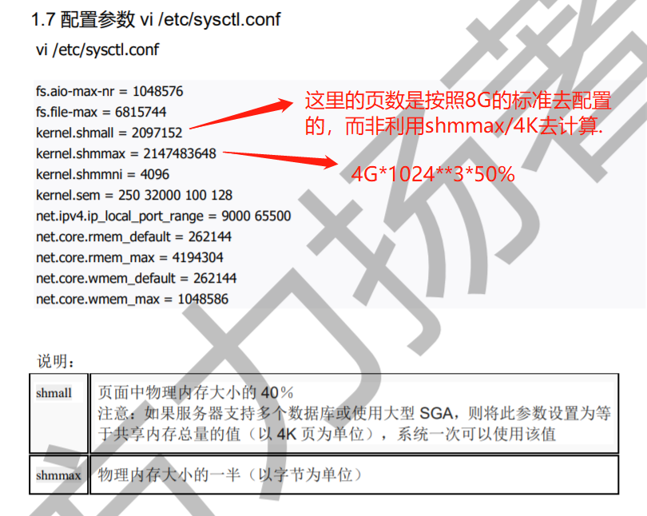

OCP12c
01. Oracle12cR2
- Repo Point
<Oracle-12.2>linuxx64_12201_database.zip
02. runInstaller
To be continued...
03. Oracle12c 架构
实例和内存结构
Instance 实例其实就是物理内存段的一部分，相当于软件进程.内核参数 系统内存4G，下面为对应内核配置大小(出自官方白皮书)

实例内存由下面两组内存参数动态调整：SGA (total_mem 80%)80%，一般不超过内存的1/2.PGA (total_mem 80%)20%.
| X | X | MEM参数 |
|---|---|---|
| X | X | MEMORY_MAX_TARGET(静态)⬇ |
SGA_MAX_SIZE |
X | MEMORY_TARGET(动态)⬇ |
| X | SGA_TARGET⬇ |
PGA_AGGREGATE_TARGET⬇ |
| X | DB_CACHE SHARED_POOL LARGE_POOL … |

SGA下的各种缓冲区
Data Buffer Cache数据高速缓冲区，又分级为：Dirty Buffer/Free Buffer/Pinned Buffer
→Dirty Buffer脏缓冲区，当数据库发生 DML（Insert、Update、Delete）操作时，会对缓冲区内容进行修改，这样缓冲区的内容就会和相对应的数据文件不一致，这时，缓冲区标识为“脏缓冲区”.
→Free Buffer自由缓冲区，当“脏缓冲区”的内容被写入数据文件后，因为该缓冲区与相应数据文件部分内容一致，所以将这些缓冲区称为“自由缓冲区”；当执行 SELECT 语句时，会将对应数据文件部分数据读取到数据高速缓存的相应缓冲区，因为缓冲区与数据块内容完全一致，所以这些缓冲区也被称为“自由缓冲区”.
→Pinned Buffer忙缓冲区，指服务器进程正在访问的缓冲区.
→ 为了防止数据库高速缓冲区空间不够用，Oracle 会将脏缓冲区中的数据写入对应的数据文件中(Redo.log)，以腾出空间给新的数据.
Ex 高速缓冲区的大小管理
1 | # 显示高速缓冲区的大小 |
Redo Log Buffer重做日志缓冲区(循环文件，redo01.log/redo02.log/redo03.log)，由一条条重做项构成.
初始化参数 LOG_BUFFER
Shared PoolSGA的共享池，内含库缓存、数字字典缓冲区(执行计划的依赖来源))等.
数据字典缓冲区数据库参考信息(数据库结构/用户等)
库高速缓存共享SQL区和共享PL/SQL区.
Ex Shared Pool 展示
1 | --当用户执行语句时 |
大型池 Java池 流池
主要是大型池的大小影响数据备份效率.
PGA
PGA 私有SQL、会话内存、SQL工作区.
In-Memory Column Store
In-Memory area适用于：
→ 资源表中的行非常多，但查询结果行不多.
→ 资源表中的列很多，但查询结果的列很少.
→ 查询聚集数据
各种进程
- 用户进程
后台进程：LGWRDBWnCKPTSMONPMON
04. 实例管理
实例加载
NOMOUNTMOUNTOPEN
1 |
实例关闭
1 |